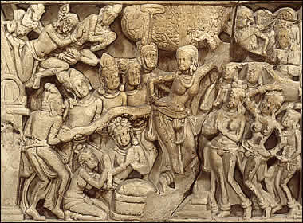

Birth of the Buddha
Queen Maya gave birth to her son Siddhartha standing under a tree and holding one of its branches. This scene shows Queen Maya under the tree with attendants around her. The left-hand side of the scene shows several male attendants holding a long cloth. On the cloth is a pair of footprints which represents Siddhartha's first seven steps. This cloth is a symbol of the newborn Siddhartha. |